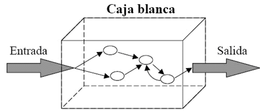

Técnica de caja blanca

Tomado de: Fiestas, J. (2014). QA: Pruebas para asegurar la calidad del producto software (III). Recuperado de https://blog.elevenpaths.com/2014/12/qa-pruebas-para-asegurar-la-calidad-del.html
Las pruebas de caja blanca, se enfocan en el funcionamiento interno del proyecto y cumplen entre otras con las siguientes características:
- Pruebas en que se conoce el código a probar.
- Diagramas de flujo y controles de cada procedimiento o método.
- Se procura ejecutar y probar cada elemento del código.
- Se realiza un seguimiento a los flujos internos, condicionales, ciclos, métodos, tipos de datos y algoritmos.
Dentro de las clases de pruebas ejecutadas mediante la técnica, se encuentran:
- Pruebas de cubrimiento.
- pruebas de condiciones.
- Pruebas de bucles.
Pruebas de cubrimiento
Permiten ejecutar al menos una vez cada sentencia, para la cual se necesitan varios casos de prueba que permitan:
- Determinar posibles “caminos” independientes.
- Que cada condición se cumpla en un caso y en otro no. En general, se necesitan tantos casos como condiciones, más uno (número ciclomático).
- Determinar la imposibilidad de cubrir el 100%.
- Descubrir el código que nunca se ejecuta: condiciones imposibles.
Ejemplo de estas pruebas, son la detección y notificación de errores internos en un código sin errores.
Pruebas de condiciones
Este tipo de pruebas, permiten cumplir o no, partes de una condición para ello, se necesitan varios casos de prueba que permitan:
- Determinar expresiones simples en las condiciones.
- Una por cada operando lógico o comparación.
- Cada expresión simple debe cumplirse en un caso y en otro no, siendo decisiva en el resultado.
- Determinar la imposibilidad de cubrir el 100%.
- Validar y probar expresiones simples no independientes.
Pruebas de bucles
Se utilizan para conseguir números de repeticiones especiales a través de bucles simples que permitan:
- Repetir cero, una y dos veces
- Repetir un número medio (típico) de veces
- Repetir el máximo-1, máximo y ¡máximo +1!
Bucles anidados
- Repetir un número medio (típico) los bucles internos, el mínimo los externos, y variar las repeticiones del bucle intermedio ensayado.
Ensayarlo con cada nivel de anidamiento.